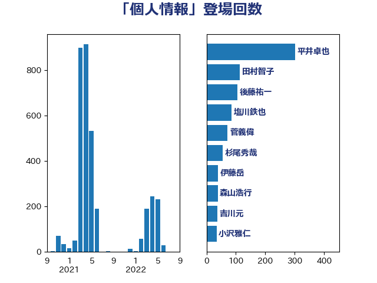

単語「個人情報」

| 平井卓也 | 自由民主党 | 301 回 |
| 田村智子 | 日本共産党 | 113 回 |
| 後藤祐一 | 立憲民主党 | 105 回 |
| 塩川鉄也 | 日本共産党 | 85 回 |
| 菅義偉 | 自由民主党 | 72 回 |
| 杉尾秀哉 | 立憲民主党 | 54 回 |
| 伊藤岳 | 日本共産党 | 39 回 |
| 森山浩行 | 立憲民主党 | 38 回 |
| 吉川元 | 立憲民主党 | 37 回 |
| 小沢雅仁 | 立憲民主党 | 34 回 |
| 本村伸子 | 日本共産党 | 34 回 |
| 川田龍平 | 立憲民主党 | 33 回 |
| 阿部知子 | 立憲民主党 | 31 回 |
| 山田太郎 | 自由民主党 | 29 回 |
| 伊藤孝恵 | 国民民主党 | 26 回 |
| 道下大樹 | 立憲民主党 | 26 回 |
| 森田俊和 | 立憲民主党 | 22 回 |
| 倉林明子 | 日本共産党 | 21 回 |
| 塩村あやか | 立憲民主党 | 20 回 |
| 田村憲久 | 自由民主党 | 19 回 |
| 輿水恵一 | 公明党 | 19 回 |
| 中谷一馬 | 立憲民主党 | 18 回 |
| 小沼巧 | 立憲民主党 | 17 回 |
| 藤井比早之 | 自由民主党 | 15 回 |
| 吉川沙織 | 立憲民主党 | 14 回 |
| 宮本岳志 | 日本共産党 | 14 回 |
| 石川博崇 | 公明党 | 14 回 |
| 上田清司 | 国民民主党 | 13 回 |
| 井上哲士 | 日本共産党 | 13 回 |
| 堀場幸子 | 日本維新の会 | 13 回 |
| 平将明 | 自由民主党 | 13 回 |
| 平木大作 | 公明党 | 13 回 |
| 後藤茂之 | 自由民主党 | 13 回 |
| 牧島かれん | 自由民主党 | 13 回 |
| 高木かおり | 日本維新の会 | 13 回 |
| 足立康史 | 日本維新の会 | 12 回 |
| 梶山弘志 | 自由民主党 | 11 回 |
| 櫻井周 | 立憲民主党 | 11 回 |
| 福田昭夫 | 立憲民主党 | 11 回 |
| 篠原豪 | 立憲民主党 | 11 回 |
| 長妻昭 | 立憲民主党 | 11 回 |
| 吉田統彦 | 立憲民主党 | 10 回 |
| 堤かなめ | 立憲民主党 | 10 回 |
| 岸真紀子 | 立憲民主党 | 10 回 |
| 斉藤鉄夫 | 公明党 | 10 回 |
| 柚木道義 | 立憲民主党 | 10 回 |
| 武田良太 | 自由民主党 | 10 回 |
| 西村康稔 | 自由民主党 | 10 回 |
| 阿部弘樹 | 日本維新の会 | 10 回 |
| 山添拓 | 日本共産党 | 9 回 |
| 浅田均 | 日本維新の会 | 9 回 |
| 福島みずほ | 社会民主党 | 9 回 |
| 吉田忠智 | 立憲民主党 | 8 回 |
| 和田政宗 | 自由民主党 | 8 回 |
| 末松信介 | 自由民主党 | 8 回 |
| 萩生田光一 | 自由民主党 | 8 回 |
| 古賀之士 | 立憲民主党 | 7 回 |
| 岸信夫 | 自由民主党 | 7 回 |
| 田中健 | 国民民主党 | 7 回 |
| 矢倉克夫 | 公明党 | 7 回 |
| 高橋英明 | 日本維新の会 | 7 回 |
| 加藤勝信 | 自由民主党 | 6 回 |
| 奥野総一郎 | 立憲民主党 | 6 回 |
| 岩谷良平 | 日本維新の会 | 6 回 |
| 田島麻衣子 | 立憲民主党 | 6 回 |
| 石橋通宏 | 立憲民主党 | 6 回 |
| 西岡秀子 | 国民民主党 | 6 回 |
| 野田聖子 | 自由民主党 | 6 回 |
| こやり隆史 | 自由民主党 | 5 回 |
| 中山展宏 | 自由民主党 | 5 回 |
| 串田誠一 | 日本維新の会 | 5 回 |
| 井上信治 | 自由民主党 | 5 回 |
| 古川康 | 自由民主党 | 5 回 |
| 嘉田由紀子 | 無所属 | 5 回 |
| 塩田博昭 | 公明党 | 5 回 |
| 大塚耕平 | 国民民主党 | 5 回 |
| 小林鷹之 | 自由民主党 | 5 回 |
| 山田宏 | 自由民主党 | 5 回 |
| 岡本あき子 | 立憲民主党 | 5 回 |
| 岸田文雄 | 自由民主党 | 5 回 |
| 沢田良 | 日本維新の会 | 5 回 |
| 浜口誠 | 国民民主党 | 5 回 |
| 神田憲次 | 自由民主党 | 5 回 |
| 階猛 | 立憲民主党 | 5 回 |
| 音喜多駿 | 日本維新の会 | 5 回 |
| 高木啓 | 自由民主党 | 5 回 |
| 三浦信祐 | 公明党 | 4 回 |
| 井坂信彦 | 立憲民主党 | 4 回 |
| 仁木博文 | 無所属 | 4 回 |
| 北神圭朗 | 無所属 | 4 回 |
| 古屋範子 | 公明党 | 4 回 |
| 坂本哲志 | 自由民主党 | 4 回 |
| 守島正 | 日本維新の会 | 4 回 |
| 斎藤嘉隆 | 立憲民主党 | 4 回 |
| 湯原俊二 | 立憲民主党 | 4 回 |
| 玉木雄一郎 | 国民民主党 | 4 回 |
| 藤岡隆雄 | 立憲民主党 | 4 回 |
| 酒井庸行 | 自由民主党 | 4 回 |
| 重徳和彦 | 立憲民主党 | 4 回 |
| 一谷勇一郎 | 日本維新の会 | 3 回 |
| 三浦靖 | 自由民主党 | 3 回 |
| 上川陽子 | 自由民主党 | 3 回 |
| 伊佐進一 | 公明党 | 3 回 |
| 北側一雄 | 公明党 | 3 回 |
| 安江伸夫 | 公明党 | 3 回 |
| 宮本徹 | 日本共産党 | 3 回 |
| 小山展弘 | 立憲民主党 | 3 回 |
| 本田顕子 | 自由民主党 | 3 回 |
| 松川るい | 自由民主党 | 3 回 |
| 松野博一 | 自由民主党 | 3 回 |
| 梅村聡 | 日本維新の会 | 3 回 |
| 河野太郎 | 自由民主党 | 3 回 |
| 熊田裕通 | 自由民主党 | 3 回 |
| 竹谷とし子 | 公明党 | 3 回 |
| 美延映夫 | 日本維新の会 | 3 回 |
| 舩後靖彦 | れいわ新選組 | 3 回 |
| 若宮健嗣 | 自由民主党 | 3 回 |
| 若松謙維 | 公明党 | 3 回 |
| 藤巻健太 | 日本維新の会 | 3 回 |
| 赤池誠章 | 自由民主党 | 3 回 |
| 金子恭之 | 自由民主党 | 3 回 |
| 鈴木宗男 | 日本維新の会 | 3 回 |
| 伊波洋一 | 無所属 | 2 回 |
| 伊藤孝江 | 公明党 | 2 回 |
| 佐藤英道 | 公明党 | 2 回 |
| 前川清成 | 日本維新の会 | 2 回 |
| 勝部賢志 | 立憲民主党 | 2 回 |
| 古川禎久 | 自由民主党 | 2 回 |
| 國重徹 | 公明党 | 2 回 |
| 堀井巌 | 自由民主党 | 2 回 |
| 小林史明 | 自由民主党 | 2 回 |
| 山岸一生 | 立憲民主党 | 2 回 |
| 山本博司 | 公明党 | 2 回 |
| 山本太郎 | れいわ新選組 | 2 回 |
| 山田勝彦 | 立憲民主党 | 2 回 |
| 山谷えり子 | 自由民主党 | 2 回 |
| 掘井健智 | 日本維新の会 | 2 回 |
| 木原誠二 | 自由民主党 | 2 回 |
| 柳ヶ瀬裕文 | 日本維新の会 | 2 回 |
| 柴田巧 | 日本維新の会 | 2 回 |
| 水岡俊一 | 立憲民主党 | 2 回 |
| 江田憲司 | 立憲民主党 | 2 回 |
| 浜田聡 | NHK党 | 2 回 |
| 清水貴之 | 日本維新の会 | 2 回 |
| 田村まみ | 国民民主党 | 2 回 |
| 田村貴昭 | 日本共産党 | 2 回 |
| 石井苗子 | 日本維新の会 | 2 回 |
| 石川大我 | 立憲民主党 | 2 回 |
| 秋野公造 | 公明党 | 2 回 |
| 笠井亮 | 日本共産党 | 2 回 |
| 舟山康江 | 国民民主党 | 2 回 |
| 船田元 | 自由民主党 | 2 回 |
| 茂木敏充 | 自由民主党 | 2 回 |
| 蓮舫 | 立憲民主党 | 2 回 |
| 藤田文武 | 日本維新の会 | 2 回 |
| 西村智奈美 | 立憲民主党 | 2 回 |
| 角田秀穂 | 公明党 | 2 回 |
| 赤嶺政賢 | 日本共産党 | 2 回 |
| 逢沢一郎 | 自由民主党 | 2 回 |
| 野上浩太郎 | 自由民主党 | 2 回 |
| 阿部司 | 日本維新の会 | 2 回 |
| 高橋千鶴子 | 日本共産党 | 2 回 |
| 麻生太郎 | 自由民主党 | 2 回 |
| 三木圭恵 | 日本維新の会 | 1 回 |
| 世耕弘成 | 自由民主党 | 1 回 |
| 中司宏 | 日本維新の会 | 1 回 |
| 中西祐介 | 自由民主党 | 1 回 |
| 佐々木さやか | 公明党 | 1 回 |
| 佐藤正久 | 自由民主党 | 1 回 |
| 古賀友一郎 | 自由民主党 | 1 回 |
| 吉田とも代 | 日本維新の会 | 1 回 |
| 吉田久美子 | 公明党 | 1 回 |
| 吉良よし子 | 日本共産党 | 1 回 |
| 和田有一朗 | 日本維新の会 | 1 回 |
| 国光あやの | 自由民主党 | 1 回 |
| 城井崇 | 立憲民主党 | 1 回 |
| 城内実 | 自由民主党 | 1 回 |
| 大串正樹 | 自由民主党 | 1 回 |
| 大島敦 | 立憲民主党 | 1 回 |
| 宮崎政久 | 自由民主党 | 1 回 |
| 小倉將信 | 自由民主党 | 1 回 |
| 小泉進次郎 | 自由民主党 | 1 回 |
| 山下雄平 | 自由民主党 | 1 回 |
| 山本香苗 | 公明党 | 1 回 |
| 岬麻紀 | 日本維新の会 | 1 回 |
| 川崎ひでと | 自由民主党 | 1 回 |
| 工藤彰三 | 自由民主党 | 1 回 |
| 打越さく良 | 立憲民主党 | 1 回 |
| 新藤義孝 | 自由民主党 | 1 回 |
| 早稲田ゆき | 立憲民主党 | 1 回 |
| 有村治子 | 自由民主党 | 1 回 |
| 本田太郎 | 自由民主党 | 1 回 |
| 東徹 | 日本維新の会 | 1 回 |
| 松島みどり | 自由民主党 | 1 回 |
| 森屋宏 | 自由民主党 | 1 回 |
| 森本真治 | 立憲民主党 | 1 回 |
| 泉田裕彦 | 自由民主党 | 1 回 |
| 浅川義治 | 日本維新の会 | 1 回 |
| 浦野靖人 | 日本維新の会 | 1 回 |
| 熊谷裕人 | 立憲民主党 | 1 回 |
| 田嶋要 | 立憲民主党 | 1 回 |
| 田畑裕明 | 自由民主党 | 1 回 |
| 磯崎仁彦 | 自由民主党 | 1 回 |
| 礒崎哲史 | 国民民主党 | 1 回 |
| 竹内譲 | 公明党 | 1 回 |
| 米山隆一 | 立憲民主党 | 1 回 |
| 羽生田俊 | 自由民主党 | 1 回 |
| 自見はなこ | 自由民主党 | 1 回 |
| 西田実仁 | 公明党 | 1 回 |
| 赤木正幸 | 日本維新の会 | 1 回 |
| 赤澤亮正 | 自由民主党 | 1 回 |
| 近藤昭一 | 立憲民主党 | 1 回 |
| 里見隆治 | 公明党 | 1 回 |
| 金村龍那 | 日本維新の会 | 1 回 |
| 鈴木英敬 | 自由民主党 | 1 回 |
| 長峯誠 | 自由民主党 | 1 回 |
| 長谷川淳二 | 自由民主党 | 1 回 |
| 須藤元気 | 無所属 | 1 回 |
| 高橋光男 | 公明党 | 1 回 |
| 高野光二郎 | 自由民主党 | 1 回 |